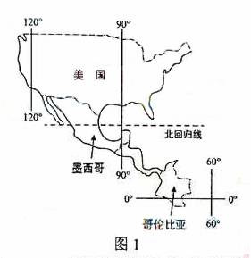
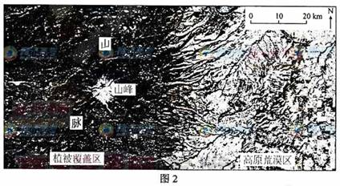
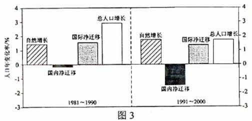
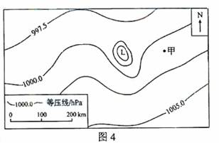
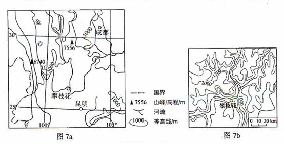
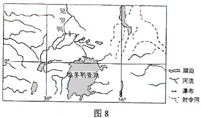
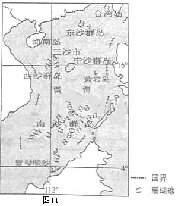
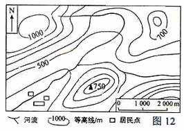
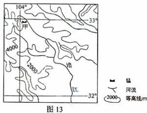

None - Fade - Slide - Convex - Concave - Zoom
选择班级
幻灯片样式
Black (default) -
White -
League -
Sky -
Beige -
Simple
Serif -
Blood -
Night -
Moon -
Solarized
哥伦比亚已经成为世界重要的鲜切花生产国。读图1，完成1～3题。
1.每年的情人节（2月14日），在美国销售的鲜切玫瑰花多来自哥伦比亚。与美国相比，在此期间，哥伦比亚生产鲜切玫瑰花的优势自然条件是
A.地形较平
B.降水较丰沛
C.气温较高
D.土壤较肥沃
【命题立意】本题考查农业区位因素，考查从区域图中获取相关信息、调动相关区域知识的能力，属简单题。
【解题思路】情人节是北半球冬季，此时美国气温低，不利于玫瑰花的生长，而哥伦比亚地处热带，气温高，利于玫瑰花的生长。而两国地形、降水、土壤都比较复杂，不限定具体地方很难比较，故A、B、D错误。
2.哥伦比亚向美国运送鲜切玫瑰花宜采用
A.公路运输
B.铁路运输
C.航空运输
D.海洋运输
【命题立意】本题考查交通运输方式的选择，考查从区域图中获取相关信息、调动相关区域知识的能力，属简单题。
【解题思路】从图中可以看出哥伦比亚距美国本土约20个纬度以上，运输距离较远，而玫瑰花属于易变质的鲜货，需要快速运到市场，所以选择速度最快的航空运输。
3.目前，墨西哥已成为哥伦比亚在美国鲜切花市场的竞争对手，与哥伦比亚相比，墨西哥开拓美国鲜切花市场的优势在于
A.运费低
B.热量足
C.技术高
D.品种全
【命题立意】本题考查农业区位条件的比较，考查学生比较分析能力。属简单题。
【解题思路】从图中可以看出墨西哥为美国邻国，比哥伦比亚距美国近，故运输费用低，A项正确；墨西哥比哥伦比亚纬度高，热量条件不具优势，B项错误；两国同为发展中国家，技术优势不明显，C项错误，而鲜花的品种从题中无法判断，故D项错误。
图2为45ºN 附近某区域的遥感影像，共中深色部分为植被覆盖区，浅色部分为高 原荒澳区;终年冰雪覆盖的山峰海拔3424米，距海约180千米.读图2.完成4~6题。
4.导致图示区域内降水差异的主导因素是
A.大气环流
B.地形
C.纬度位置
D.洋流
【命题立意】本题考查降水的影响因素，考查学生提取信息，读图判断分析问题的能力，难度较大。
【解题思路】由题干可知该区域位于45°N，并且距海(180km)较近，读图可知西侧有山脉且有植被覆盖，东侧为高原荒漠。有纬度位置可知该区应当受西风带影响，西侧为西风迎风坡，降水量大，植被覆盖好，东侧为西风背风坡雨影地区，降水少，形成高原荒漠，所以导致图示区域内降水差异的主导因素是是地形，而不是大气环流、纬度位置、洋流。
5.该区域位于
A.亚欧大陆太平洋沿岸地区
B. 亚欧大陆大西洋沿岸地区
C.北美洲大西洋沿岸地区
D. 北美洲太平洋沿岸地区
【命题立意】本题考查世界区域知识，考查学生提取有用信息进行区域定位的能力，难度居中。
【解题思路】该地区位于西风带，并且距海较近，西侧有山脉，并且有植被覆盖，山脉东侧为高原，高原上为荒漠景观，结合世界地理欧洲西部和美国所学知识，很容易判断该项地区为北美洲太平洋沿岸地区。
6.该区域中山脉西坡山麓的自然植被属于
A.常绿阔叶林
B.常绿硬叶林
C.针阔叶混交林
D.草原
【命题立意】本题考查地域分异规律，考查学生运用所学规律、原理解决问题的能力；难度居中。
【解题思路】常绿阔叶林为亚热带季风气候（亚热带季风性湿润气候）对应的植被，常绿硬叶林为地中海气候对应的植被，而该地区为45°N，不可能有这两种植被，故A、B项错误；针阔叶混交林主要分布在亚欧大陆中高纬度地区，图示地区为45°N，且为山区，故为针阔叶混交林，C项正确；草原一般为降水量较少的半干旱地区对应的植被，而图示地区西侧受西风带和地形抬升作用的影响，降水较多，故不可能是草原，D项错误；
图3示意某城市20世纪80年代和90年代平均人口年变化率，当前该城市中人口约1300万。据此完成7~8题
7.20世纪90年代和80年代相比，该城市
A.总人口增长速度加快
B总人口减少
C．人口自然增长率降低
D人口净迁入量减少
【命题立意】本题考查人口增长和人口迁移的相关知识，考查学生的读图分析能力，难度较小。
【解题思路】由图可以看出总人口增长速度减慢，人口自然增长率略有增大A、C项错误；总人口增长速度大于0，所以总人口增加，B项错误；人口净迁入量为国际净迁移率和国内净迁移率相加再乘以总人口，图中显示国际净迁移率为正略有下降，而国内净迁移率为负且下降较大，所以人口净迁入量减少，D项正确。
8.该城市所在的国家可能是
A.美国
B.日本
C.俄罗斯
D.德国
【命题立意】本题考查人口增长和人口迁移的相关知识，考查学生分析判断问题的能力。难度居中
【解题思路】读图可知该城市80年代和90年代国际迁入量都比较大，而国内迁移率为负，且90年代比80年代大幅下降，说明90年代该市国内迁出量较大；90年代美国西部和南部经济发展迅速，东北部城市环境质量较差，导致年轻人口出于经济就业因素和老年人口出于环境因素考虑，由东北部迁往西部和南部地区，故A项正确；而德国、日本和俄罗斯人口自然增长率较低，不符合题意，故B、C、D项错误。
图2示意我国某地区14日6时的气压形式，L为低压，图中天气系统以200千米/天的速度东移。读图4，完成9~11题
9.图中甲地14日6~9时的风向为
A.偏东风
B. 偏南风
C.东北风
D. 西北风
【命题立意】本题词考查等压线图中风向的判读，考查学生读图判断能力，难度较小。
【解题思路】我国为北半球，画出气压梯度力，再向右偏30-45度，可得出6～9时甲地为偏南风,故B项正确。
10气象部门发布了暴雨预报，甲地暴雨开始的时间约为
A.14日14时
B. 14日19时
C. 15日4时
D. 15日11时
【命题立意】本题考查常见的天气系统，考查学生读图能力和动态分析问题的能力。难度居中。
【解题思路】据图和所学知识可推断当低压中心控制甲地时可能出现暴雨，由图可知甲地距低压中心以东约100千米多，而题干里已说明该天气系统以200千米/天的速度东移，可算出该低压系统移至甲地需要12个小时多，结合选项可知只有B项符合。
11.该地区及图示气压形式出现的月份可能为
A.华北平原，3、4月份
B. 四川盆地，1、2月份
C.黄土高原，10、11月份
D. 东南丘陵，4、5月份
【命题立意】本题考查我国的气压分布及变化状况，考查学生提取信息，调动所学知识，分析解决问题的能力。难度较大。
【解题思路】图示为我国某地区，而且气压低，出现低压中心，故应为夏半年，除D选项意外的时间我国及亚欧大陆受蒙古高压控制，气压由南向北升高，基本可以排除ABC项。春季，由于东南丘陵比黄土高原纬度低，气温高，加之3、4月份华北平原受冷空气影响频繁，所以东南丘陵4、5月份更易出现低压中心,D项正确。
36.（22分）阅读图文资料，完成下列要求。
居住在成都的小明和小亮在“寻找最佳避寒地”的课外研究中发现，有“百里钢城”之称的攀枝花1月平均气温达13.6℃（昆明为7.7℃，成都为5.5℃），是长江流域冬季的“温暖之都”。图7a示意攀枝花在我国西南地区的位置，图7b示意攀枝花周边地形。
（1）分析攀枝花1月份平均气温较高的原因。（8分）
因地形阻挡，冬季受北方冷空气（寒潮）影响较小；位于河流（金沙江）谷地，山高谷深，盛行下沉气流，气流在下沉过程中增温。（8分）
【命题立意】本题以中国区域图为背景考查高线地形图的判读、影响气温高低的因素、天气状况的分析、大气污染的成因等方面的知识，考查学生结合已知信息读图分析、判断、推理的能力；难度适中。
【解题思路】（1）由攀枝花周边地形图可知攀枝花位于河流谷地，北部为山地，冬季能够阻挡北方冷空气，使得当地气温偏高；由于地处谷地，盛行下沉气流，气流下沉的过程中气温升高，所以攀枝花1月份气温较高。
（2）推测攀枝花1月份天气特征。（6分）
多晴天、少云雨，风力弱，气温较高，较稳定（波动小）（6分）
【解题思路】（2）由于地处谷地，受冷空气影响小，盛行下沉气流，可推出1月份攀枝花多睛朗天气，风力较小，气温较高，变化小，较稳定。
（3）小明建议把攀枝花打造成“避寒之都”，吸引人们冬季来此度假。小亮则从空气质量角度提出质疑。试为小亮的质疑提出论据。（8分）
论据：钢铁工业以及其他工业、城市交通等排放大量废气；（山高谷深，）地形相对封闭，下沉气流空气稳定（易出现逆温），不利于空气中污染物的扩散。（因此，空气质量可能不佳，不适宜度假。）（8分）
【解题思路】（3）攀枝花是典型的以钢铁工业为主的工矿城市，工业及城市交通排放的废气较多；又由于地处谷地，地形封闭，盛行下沉气流易形成逆温，使得空气中的污染物不易扩散，所以该市虽然冬季气温较高，但空气污染可能较为严重，不适宜打造“避寒之都”。
37.（24分）阅读图文资料，完成下列要求。
维多利亚湖是世界第二大淡水湖，湖面海拔1134米，鱼类资源丰富。尼罗河鲈鱼是体型最大的淡水鱼之一，属肉食性鱼，原产于尼罗河、刚果河等非洲河流中。20世纪50年代，尼罗河鲈鱼被引入维多利亚湖，并迅速繁殖。该湖的尼罗河鲈鱼经捕捞、加工后多销往欧洲，成为昂贵的美食。图8示意维多利亚湖的位置及周边水系。
（1）分析阻碍尼罗河鲈鱼游入维多利亚湖的自然原因。（6分）
（维多利亚湖）处于相对封闭的高原盆地中（北部唯一出口通向尼罗河）；湖泊海拔高，尼罗河上游多瀑布，阻挡了尼罗河鲈鱼游入维多利亚湖（6分）
【命题立意】本题以非洲维多利亚湖引进尼罗河鲈鱼为背景，考查维多利亚湖所处地区的地形，维多利亚湖有利于尼罗河鲈鱼繁殖的自然条件, 尼罗河鲈鱼迅速繁殖对当地渔业资源及捕捞业的影响和对维多利亚湖沿岸地区经济发展的贡献；本题情境设置简单，材料提供的信息较详细，考查学生结合所学知识，提取有效信息，分析、探讨问题和描述、阐释问题的能力；本题难度居中。
【解题思路】（1）维多利亚湖地处东非高原，海拔较高，为高原上的盆地地形，由图可知该湖只有北部通向尼罗河，故地形较封闭；尼罗河由南向北流，故维多利亚湖向北流入尼罗河，可推出维多利亚湖到尼罗河地势由高到低，结合图例可知尼罗河上游还有瀑布，阻挡尼罗河鲈鱼游入维多利亚湖。
（2）分析尼罗河鲈鱼在维多利亚湖迅速繁殖的自然条件。（6分）
维多利亚湖湖面广阔，为体型大的尼罗河鲈鱼提供了广阔的生存空间；湖中鱼类为尼罗河鲈鱼提供充足的饵料。（6分）
【解题思路】题中材料已告知“维多利亚湖是世界第二大淡水湖，鱼类资源丰富。尼罗河鲈鱼是体型最大的淡水鱼之一，属肉食性鱼”可推出维多利亚湖湖面广阔，为体型大的尼罗河鲈鱼提供了广阔的生存空间；湖中鱼类为尼罗河鲈鱼提供充足的饵料。
（3）分析尼罗河鲈鱼迅速繁殖对维多利亚湖鱼类资源及捕捞业的影响。（6分）
尼罗河鲈鱼体型大，食量大，导致一些原有鱼类数量迅速减少甚至灭绝；（尼罗河鲈鱼体型大，捕捞技术和方法与当地传统不同，）冲击传统捕捞业，同时出现专门捕捞尼罗河鲈鱼的捕捞业（6分）
【解题思路】由材料可知尼罗河鲈鱼是体型较大的肉食性鱼，可推出该鱼食量大，导致一些原有鱼类数量迅速减少甚至灭绝；（尼罗河鲈鱼体型大，捕捞技术和方法与当地传统不同，）冲击传统捕捞业，同时出现专门捕捞尼罗河鲈鱼的捕捞业。
（4）说明尼罗河鲈鱼引进对维多利亚湖沿岸地区经济发展的贡献。（6分）
产量大价格高（国际市场需求量大，）出口创汇；捕捞、加工、运输等产业随之兴起，扩大就业，促进相关产业发展。（6分）
【解题思路】由材料“尼罗河鲈鱼是体型最大的淡水鱼之一”和“20世纪50年代，尼罗河鲈鱼被引入维多利亚湖，并迅速繁殖。该湖的尼罗河鲈鱼经捕捞、加工后多销往欧洲，成为昂贵的美食。”可推出尼罗河鲈鱼产量大价格高（国际市场需求量大，）出口创汇；捕捞、加工、运输等产业随之兴起，扩大就业，促进相关产业发展。
42. (10分)旅游地理 阅读图文资料，完成下列要求。
2012年6月21日，我国正式公布在海南省建立三沙市，管辖西沙群岛、中沙群岛、南沙群岛的岛礁及其海域。三沙市以其独特的旅游资源优势，强烈地吸引着游客。图11示意三沙市的地理位置。
说明三沙市旅游资源的独特性及当前旅游开发中应注意的问题。
独特性：热带海域风光；岛礁（珊瑚礁）景观。（4分） 应注意的问题：做好旅游规划；保护海洋生态环境；适当配置旅游服务设施，保障生活用品供给；处理好旅游环境容量与旅游规模的关系。（6分）
【命题立意】本题考查旅游资源的特点和旅游资源的开发与保护，考查学生读图能力和调动和运用知识的能力，难度较小。
【解题思路】由图可知三沙市地处南海，属热带地区，岛礁众多，可推出三沙市旅游资源的独特性：热带海域风光；岛礁（珊瑚礁）景观。由于三沙市是新设立的市，旅游资源独特，对游客吸引力大，离大陆远，属于海域风光所以开发过程中应注意做好旅游规划；保护海洋生态环境；适当配置旅游服务设施，保障生活用品供给；处理好旅游环境容量与旅游规模的关系。
43，（10分）自然灾害与防治
阅读图文资料，完成下列要求。 图12所使区域位于我国江南丘陵区。
分析图中居民点易遭洪灾的原因，并提出具体的应对措施
原因：区域属于亚热带季风气候，多暴雨。居民点地处谷底河边，其河流上游地区集水面积较广。暴雨时流水在谷底汇集，河水暴涨，易淹没农田和房屋。 措施：将居民点迁向合理的位置（地势较高，地形起伏和缓，既不受洪水威胁又无地质灾害隐患的地方）。或修建水库拦蓄洪水，修建沿河防洪堤。
【命题立意】本题考查洪涝灾害的形成与危害，考查学生等高线地形图的判读能力和结合所学知识分析、解决问题的能力。难度较小。
【解题思路】原因：结合材料和等高线地形图可知图中居民点位于河流下游谷地河边，江南丘陵区属亚热 带季风气候可推出该居民点易遭受洪灾的原因为区域属于亚热带季风气候，多暴雨。居民点地处谷底河边，其河流上游地区集水面积较广。暴雨时流水在谷底汇集，河水暴涨，易淹没农田和房屋。由于该居民点地处河流下游谷地河边，所以要避免洪灾影响只能迁往地势较高，地形起伏和缓，既不受洪水威胁又无地质灾害隐患的地方；要不迁走只能修建水库拦蓄洪水，修建沿河防洪堤。
44、（10分）环境保护
阅读图文资料，完成下列要求。
某企业在甲地（图13）开采锰矿并建有电解锰厂，生产过程中需用硫酸和铅；在附近山坡上建有尾矿矿渣库。 分析该尾矿矿渣库对环境的潜在危害，
危害：该尾矿矿渣库位于江河上游地区，地处亚热带季风气候区，夏季易发洪水、泥石流、滑坡等。若将上坡上的尾矿矿渣冲入江中，（其中的硫酸、铅等）会对江水造成污染，危及沿岸用水安全。 措施：加固尾矿矿渣库；兴建必要的行洪通道，防止洪水等将矿渣冲入江中。
【命题立意】本题考查矿产资源的开发对地理环境的影响，考查学生简单的区域性定位、提取材料和区域图中的关键信息和等高线地形图的判读能力。难度不大。
【解题思路】由图中的经纬度和等高线可知该地位于我国西南地区，为亚热带季风气候区，且位于河流上游，夏季易发洪水、泥石流、滑坡等自然灾害；材料中提到生产过程中需用硫酸和铅，可推出若将上坡上的尾矿矿渣冲入江中，其中的硫酸、铅等会对江水造成污染，危及沿岸用水安全。结合尾矿矿渣库对环境的潜在危害，从危害的来源着手，提出解决措施：加固尾矿矿渣库；兴建必要的行洪通道，防止洪水等将矿渣冲入江中。